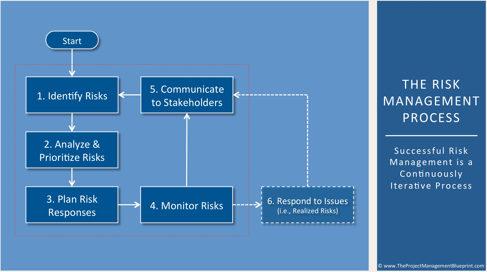
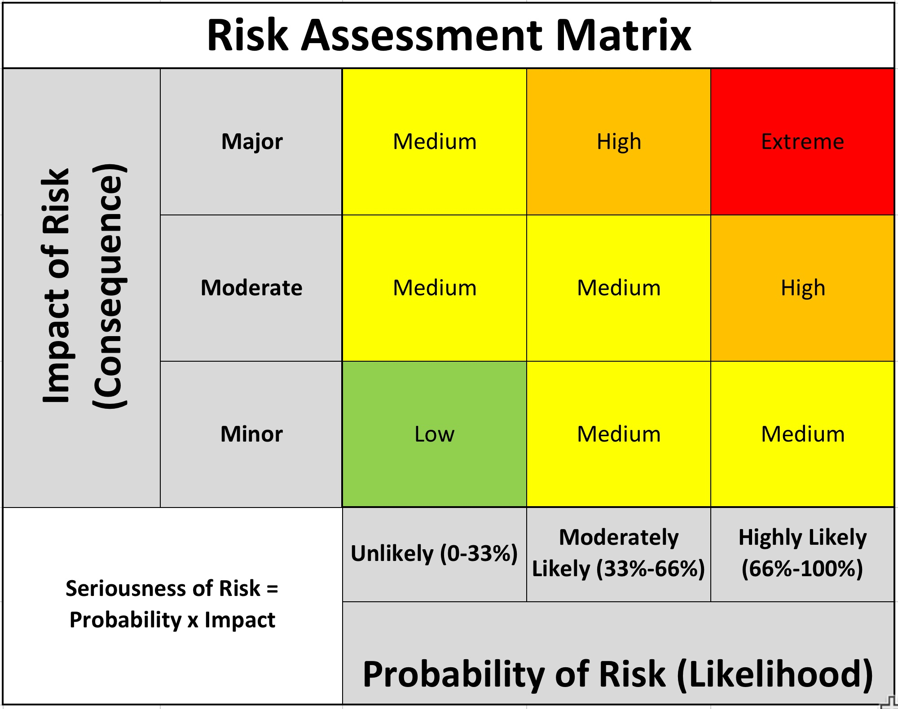

Risk management might sound like a difficult task, but it is one that every software company should follow.
If you are overwhelmed by it, we breakdown risk management in a few questions that should guide you thoughtfully the process:
1.What are the possible sources of loss?
2.What is the probable impact of a loss should it at all occur?
3.What should be done when a loss takes place?
4.Should the loss be allowed to enhance or something should be done to minimize it?
Every question above corresponds to a phase of the risk management, and if you are able to answer them all, your risk plan will be done. Simple as that!
As we can see below, the process consists in identifying risks, that will be then analyze and ranked according to its impact, this will also be determinant to your risk response. Once this part is done, it all comes down to a systematic monitoring of each risk in order to take action if it becomes an issue.

The Process
1. Identify Risks
In this first step of the risk management process, you and your project team identify as many potential risks, events, factors, and other items that threaten the success of your project.
Multiple methods can be used to identify these risks, including team brainstorming, systematic methodologies, and examining what happened on other similar projects. It’s also often useful to seek the counsel of outside experts and other PMs who have managed similar projects to yours.
Risks identified should include programmatic, technical, external, corporate, and other types. I.e., these are not just one type, such as technical. Instead, the goal is to find all types of risks that threaten your project in any manner. Don’t worry about whether a potential risk is too small or unlikely to occur at this point; just write everything down.
2. Analyze & Prioritize Risks
In this second step of the risk management process, an analysis of each identified risk from the previous step is performed by you and your team. This is done in two parts. The first analysis performed is qualitative in nature, and helps create an initial gut level sorting or “triaging” of the list into a prioritized ranking. Then a more formal quantitative analysis is performed on the identified risks, starting with the higher priority risks, and then working down through the list

3. Plan Risk Responses
In this step, responses are developed for the various risks in the risk register. These responses are essentially the individual plan or plans that you and your team will implement to minimize the likelihood and/or impact of each significant risk. The threshold for developing formal responses is usually determined by way of the seriousness ranking of the individual risks.
For risks above a specific threshold, formal risk responses are developed by the project team. These responses usually employ one or more standard techniques, such as avoidance, mitigation, risk transfers (e.g., buying insurance), or just acceptance and monitoring of the risk.
All risk responses are included in the risk register
4. Monitor Risks
Once the risk register is complete, the role of project management is to monitor the individual risks contained therein and update the register on a period basis and/or as new risks surface. It’s often very important to analyze and address serious risks as soon as they arise, immediately applying the appropriate risk response plan.
A regular schedule of systematically and formally reviewing the status of each risk in the register is implemented during this step. This evaluation includes assessments of probability, impacts, seriousness, trigger dates, and response plans. As projects evolve, it’s very easy to let the risk register “go stale” and assume that the state of the project’s risks last month or last quarter is still valid this month or quarter. This can be a dangerous attitude to take, and it’s suggested that you schedule regular formal and informal reviews of project risks.
5. Communicate with Stakeholders
A primary role of Project Management is communicating to key stakeholders the the status of project risks, their collective cost/schedule/quality/scope exposure, response plans, and the resolution of issues as they arise. As the project progresses, the communication step includes a description of changes and the addition and subtraction of new risks to the register.
6. Respond to Issues
If/when a risk is realized, it is no longer technically considered to be a “risk,” but instead is now referred to as an “issue.” In the diagram above, this is illustrated by the fact that the Respond to Issues step is technically outside of the Risk Management process; it is now an issue that the project needs to schedule/budget/plan-for. If appropriate, a previously identified response to that risk (or a variation of it) is implemented at this point.